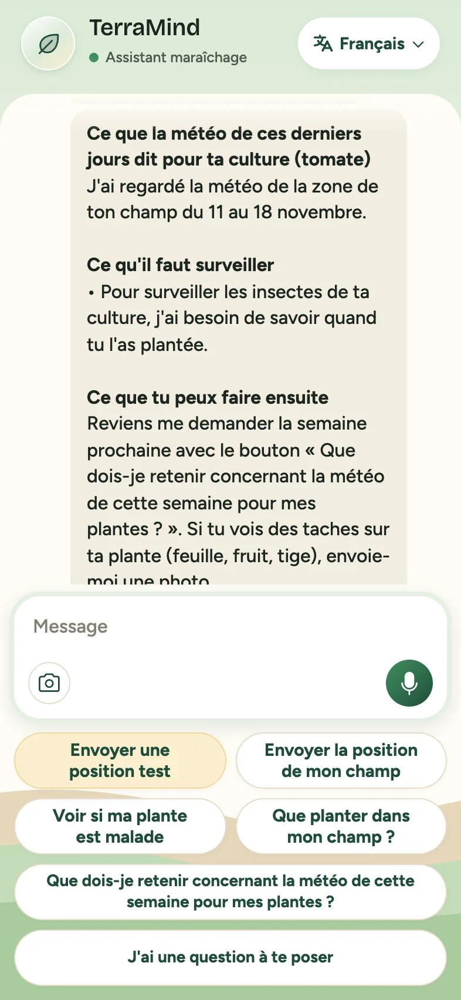

PAS Challenge 2026 · SALTIS
Document technique
Données, méthode et résultats
Ce document explique d'où viennent les données de TerraMind, comment chaque brique a été construite, et ce qu'elle vaut vraiment, chiffres à l'appui, limites comprises. Tout ce qui est décrit ici tourne en ligne et peut être vérifié dans le code.
L'équipe étudie à l'ENSAE Dakar (École nationale de la statistique et de l'analyse économique)
AKAlioune Abdou Salam KaneChef de projet, responsable du moteur, du bot Telegram et de la conception de l'application mobile
JKJudicaël Oscar KafandoResponsable de la collecte des données et de l'entraînement des modèles
NFNdeye Ramatoulaye Ndoye FallResponsable du contenu agricole, du wolof et du pitch
◆TerraMind en bref
TerraMind est un conseiller agricole pour les petits maraîchers des Niayes (Sénégal). Il répond à trois questions : que planter sur mon sol ce mois-ci, quel risque la météo annonce cette semaine, et quelle est cette maladie sur ma photo. Il répond aussi aux questions libres. L'agriculteur l'utilise sur son téléphone, par le bot Telegram ou l'application Android, en français (texte) ou en wolof (notes vocales).
91,7 %
de bons diagnostics sur 1 058 photos de terrain africaines jamais vues (TOM2024)23
fiches agricoles écrites à partir de 27 documents publics (ISRA, PADEN, DPV, FAO…)76
phrases wolof relues par un locuteur, dites par la voix d'Octopus88
tests automatiques du moteur, tous réussis (19 nov 2026)
◆Plan du document
1. DonnéesImages, sol, météo, documents agricoles, voix. Volume, nettoyage, qualité, vie privée. Pages 3 et 4
2. MéthodeLes quatre briques, le wolof avec Octopus, et pourquoi chaque choix. Pages 5 et 6
3. RésultatsChiffres, tableaux, captures, limites et prochaines étapes. Pages 7 à 9
L'architecture d'ensemble est en page 2. Les mots techniques sont expliqués la première fois qu'ils apparaissent.
TerraMind · PAS Challenge 2026 · Document technique1 / 9
◆Architecture : un moteur, deux façades
L'application et le bot ne contiennent aucune logique agricole. Ils envoient la demande à un seul moteur (un programme Python sur un serveur), qui interroge les sources et renvoie la réponse. C'est ce qui nous a permis de passer de WhatsApp à Telegram en quelques jours quand Meta a bloqué notre compte (décision D12).
Ce que voit l'agriculteur
Bot TelegramTexte, photo, position, notes vocales
Application AndroidExpo / React Native (APK)
Application webLa même, dans le navigateur (pour le jury)
→
Le moteur (Render)
FastAPI · Python
Il reçoit 5 sortes de demandes et renvoie la réponse :
« Que planter dans mon champ ? » /v1/plan
« Quels risques pour mes plantes cette semaine ? » /v1/alert
Une photo : « Ma plante est‑elle malade ? » /v1/diagnose
Une question libre, écrite ou vocale /v1/chat
Les messages du bot Telegram /telegram
→
Sources et services
iSDAsoilSol au point du champ, pixels de 30 m
NASA POWERMétéo heure par heure
MobileNetV3 (ONNX)Le modèle de diagnostic, 17 Mo
23 fiches + Gemini (RAG)Réponses rédigées uniquement à partir des fiches
Octopus (outil du concours)Voix wolof et reconnaissance de la parole wolof
◆Les outils utilisés
| Partie | Outil | Pourquoi ce choix |
|---|
| Moteur | Python, FastAPI, Docker | Une seule base de code pour toutes les façades ; l'image Docker est publiée sur ghcr.io et tourne sur Render (offre gratuite, 512 Mo de mémoire). |
| Diagnostic | PyTorch (entraînement), ONNX Runtime (en ligne) | ONNX Runtime fait tourner le modèle sans PyTorch : image plus légère, 15 ms par photo sur un cœur de processeur. |
| Voix wolof | Octopus : synthèse vocale (TTS) et reconnaissance de la parole (ASR) wolof | Plateforme fournie par le concours ; elle parle et comprend le wolof sans que nous ayons à héberger un modèle vocal de plusieurs Go. |
| Rédaction | Gemini gemini-3.5-flash-lite | Le plus rapide et le moins cher ; son rôle se limite à reformuler les extraits de fiches et à traduire. |
| Mémoire du bot | Supabase (PostgreSQL) | Render efface tout à chaque redémarrage ; la conversation doit survivre. |
| Application | Expo (React Native), EAS, Vercel | Un seul code pour Android et le web ; APK compilé sur EAS, version web publiée sur Vercel. |
| Qualité | pytest, GitHub Actions, gitleaks | 88 tests du moteur ; contrôle de tout l'historique Git avant de rendre le dépôt public (aucun secret trouvé). |
Pour le jury. Aucun compte de démonstration n'est nécessaire. L'application web s'ouvre sans identifiant ; le bouton « position test » place le champ à Rufisque. Le bot demande seulement un compte Telegram. Les clés des services (Octopus, Gemini, Supabase, Telegram) restent côté serveur et ne sont jamais dans le dépôt.
TerraMind · PAS Challenge 2026 · Document technique2 / 9
01Données : sources, nature et volume
Règle de l'équipe (décision D6) : aucune donnée inventée. Chaque jeu est public, sa licence est vérifiée, et sa provenance est notée dans data/README.md. Les images restent hors de Git ; un script les retélécharge et vérifie leur empreinte.
| Source | Nature | Volume utilisé | Licence · usage |
|---|
| TOM2024 | Photos de terrain, Burkina Faso : tomate, oignon (feuilles, fruits, plantes entières) | 12 082 images, 24 classes ; tomate et oignon gardés | CC BY 4.0 · entraînement et test du diagnostic |
| PlantVillage | Feuilles photographiées en laboratoire, fond uni | Plafonné à 600 images par classe | CC BY-SA · entraînement |
| PlantDoc | Photos du web, fonds variés, plusieurs feuilles | Entraînement + 102 photos de test | CC BY 4.0 · entraînement, test « difficile » |
| CCMT | Photos du Ghana, 400 × 400 px | 25 220 images, 24 071 après nettoyage | CC BY 4.0 · essayé (v2), non retenu |
| iSDAsoil | Cartes du sol de l'Afrique, pixels de 30 m, 0 à 20 cm | Lu à la demande, au point du champ | CC BY 4.0 · que planter |
| NASA POWER | Météo heure par heure (température, humidité) | 7 derniers jours ; 2020-2025 pour le test des règles | Publique · alertes |
| Documents agricoles | Guide ISRA/FAO 1987, fiches PADEN, manuel DPV, livrets français-wolof, articles | 27 documents → 23 fiches | Cités page par page · réponses |
| Statistiques | ANSD (RGPH-5), DAPSA (enquêtes agricoles 2020-2023), recensement des Niayes 2012 | 11 tableaux extraits | Publiques · contexte et choix des cultures |
| Voix wolof | Phrases du bot traduites et relues ; 3 enregistrements d'un locuteur de l'équipe | 76 phrases, 76 notes vocales | Produites par l'équipe · bot et application |
01Préparation des images du diagnostic
1Choix des classes. On garde les cultures des Niayes présentes dans les jeux (tomate, oignon, pomme de terre, poivron) et les classes d'au moins 50 images (décision D8). Résultat : 26 classes, dont 21 problèmes (maladies, ravageurs, accidents) et 5 « sain ».
2Équilibre labo / terrain. PlantVillage est plafonné à 600 images par classe, pour que le modèle n'apprenne pas surtout des photos de laboratoire. Total : 14 074 images d'entraînement.
3Découpage sans fuite. Chaque image est rangée en entraînement, validation ou test selon son empreinte (hachage du fichier) : deux copies d'une même photo tombent toujours du même côté. Validation de terrain : 1 291 photos (15 % de TOM2024 + 20 % de PlantDoc). Test : 1 058 photos TOM2024 et 102 PlantDoc, jamais vues à l'entraînement.
4Mise au format. Images ramenées à 224 × 224 px ; à l'entraînement, recadrages serrés, flou et effacements aléatoires, pour ressembler aux photos de téléphone.
TerraMind · PAS Challenge 2026 · Document technique3 / 9
01Qualité des données : ce que nous avons contrôlé
| Contrôle | Ce que nous avons trouvé et fait |
|---|
| Images illisibles | Les 25 220 images CCMT ouvertes une à une ; 200 images TOM2024 contrôlées : aucune illisible. |
| Étiquettes douteuses | CCMT : « leaf blight » et « leaf curl » de la tomate ne disent pas de quelle maladie il s'agit ; exclus faute de source (décision D14). |
| Feuilles ou fruits ? | Toutes les images tomate de TOM2024 regardées par classe : le mildiou y est presque toujours sur fruit, alors que PlantVillage et PlantDoc ne montrent que des feuilles. Consigne photo adaptée : « montre ce qui t'inquiète ». |
| Biais de source | Quand une classe ne vient que d'un jeu, le modèle peut reconnaître le style des photos au lieu de la maladie. Vérifié avec CCMT (v2) : 98,7 % sur son propre test, mais chute sur PlantDoc. D'où des résultats mesurés source par source. |
| Sol | Un pixel de 30 m peut tomber sur une piste ou une mare : on prend la moyenne de 5 × 5 pixels (environ 150 m). Contrôle : 59 à 83 % de sable mesurés dans les Niayes, cohérent avec les études publiées. |
| Météo | NASA POWER publie avec 2 jours de retard (mesuré le 13 nov) : on garde un jour de marge et on rejette les journées de moins de 20 heures. |
| Fiches | 3 vérifications indépendantes, phrase par phrase, contre les documents sources : environ 320 affirmations contrôlées, 51 corrigées. Un test automatique vérifie qu'aucune fiche ne nomme de produit ni de dose. |
| Wolof | Chaque phrase traduite par 3 systèmes (Gemini, NLLB-200, Teranga), puis relue par un locuteur. Aucune note vocale n'est produite pour une phrase non relue. |
01Vie privée et données personnelles
Nous appliquons la minimisation des données, principe du RGPD et de la loi sénégalaise n° 2008-12 sur les données personnelles : ne garder que le strict nécessaire, le moins longtemps possible.
Ce qui est gardé
- Position arrondie à 0,01° (environ 1 km) : on ne localise jamais la parcelle.
- Langue, culture déclarée, date de plantation, 3 derniers échanges (pour suivre la conversation).
- Rangé sous une empreinte SHA-256 salée du numéro de conversation : le numéro Telegram n'est jamais stocké.
- La commande
/oublier efface tout.
Ce qui n'est jamais gardé
- Les photos envoyées : analysées en mémoire, puis oubliées.
- Les notes vocales et leur transcription : les journaux ne gardent que des durées.
- Le nom, le numéro de téléphone, la photo de profil.
- Gemini ne reçoit que la question et des extraits de fiches, rien sur la personne.
Aucune photo ni position d'agriculteur n'a été collectée pour l'entraînement : toutes les images viennent de jeux publics. Avant de rendre le dépôt public, tout l'historique Git (158 commits) a été passé au détecteur de secrets gitleaks et relu : aucune clé, aucun numéro, aucune donnée personnelle. Les captures d'écran du bot ont été vérifiées une à une.
TerraMind · PAS Challenge 2026 · Document technique4 / 9
02Méthode : quatre briques, une règle commune
Règle commune : chaque conseil vient d'une source citée. Quand TerraMind n'a pas de source ou n'est pas sûr, il le dit, et il ne donne jamais de produit ni de dose : il renvoie vers un agent agricole. Chaque nombre utilisé pour décider est justifié dans docs/seuils-et-parametres.md.
Que planter ? /v1/plan
1Le moteur lit le sol au point du champ dans iSDAsoil (sable, argile, pH), en ne téléchargeant que le morceau de carte utile.
2Il demande ce qu'aucune carte ne sait : l'eau du puits est-elle salée ? le champ est-il en bas-fond ?
3Il croise avec les règles du guide ISRA de 1987 (périodes de semis, pH, tolérance au sel, sols lourds au-delà de 35 % d'argile) et classe 8 cultures : tomate, pomme de terre, oignon, chou, poivron, carotte, piment, jaxatu.
Pourquoi des règles et pas un modèle appris ? Il n'existe aucune donnée ouverte de rendement par parcelle au Sénégal. Une règle publiée est vérifiable ; un modèle appris sur rien ne l'est pas.
Quel risque cette semaine ? /v1/alert
Sur les 7 derniers jours de météo horaire, le moteur applique des modèles publiés, choisis pour leur usage en conseil agricole :
- Mildiou : critères Hutton (Tmin ≥ 10 °C, humidité ≥ 90 % pendant 6 h, 2 jours de suite), avec le plafond de 26,6 °C du modèle de Wallin, sinon il sonnerait tout l'hivernage.
- Alternariose : TOMCAST (Madden et al. 1978), alerte à 15 points, le bas de la fourchette publiée.
- Mineuse de la tomate et teigne du chou : degrés-jours depuis le repiquage ; alerte à partir de la 3e génération.
Pourquoi ? Ces règles sont publiques et expliquables. Nous les avons rejouées sur 2020-2025 (§ 3) ; d'où deux garde-fous : pas d'alerte sans culture déclarée, et un calcul par point (Rufisque, sur la côte, se comporte autrement que l'intérieur).
Quelle est cette maladie ? /v1/diagnose
1Modèle : MobileNetV3-Large pré-entraîné sur ImageNet, réentraîné sur nos 26 classes (10 époques, graine 2026, échantillonnage équilibré entre classes).
2Calibration : les « confiances » d'un réseau sont souvent trop sûres d'elles. Une température de 0,81 (méthode de Guo et al. 2017), apprise sur la validation de terrain, les rend honnêtes.
3Seuil « je ne suis pas sûr » à 0,6 : en dessous, aucune maladie n'est nommée. Au-dessus, la réponse dit « première indication » et explique le problème en 4 temps (ce que c'est, pourquoi, que faire, comment éviter), à partir des fiches.
Pourquoi MobileNetV3 ? ConvNeXt-Tiny gagne environ 2 points, mais il est 6,6 fois plus lourd et 8 fois plus lent ; sur un serveur gratuit de 512 Mo, une panne de mémoire coûterait plus cher que 2 points (comparaison en § 3).
TerraMind · PAS Challenge 2026 · Document technique5 / 9
Les questions libres /v1/chat
1Recherche : la question est comparée aux 23 fiches avec BM25 (méthode classique de recherche de texte, k1 = 1,4, b = 0,75). Sous un score de 3,5, réponse directe : « je ne sais pas ».
2Rédaction : Gemini reçoit au plus 3 passages et rédige une réponse courte uniquement à partir d'eux, sans produit ni dose. S'il juge que les passages ne répondent pas, il doit dire « je ne sais pas ». Sans Gemini, le moteur renvoie le passage le plus pertinent tel quel.
3Sources : chaque réponse cite la fiche et la page du document d'origine.
Pourquoi cette méthode, appelée RAG (Retrieval-Augmented Generation, génération augmentée par la recherche) ? Un modèle de langage seul invente volontiers. Ici, il ne fait que reformuler des fiches vérifiées : la connaissance vient des documents, pas du modèle.
02Le wolof à l'oral, avec Octopus
Beaucoup d'agriculteurs lisent peu. En mode wolof, TerraMind parle et écoute. Les deux sens passent par Octopus, la plateforme fournie par le concours.
TerraMind parle (synthèse vocale)
- Les 76 phrases fixes du bot (accueil, plan, alertes, fiches…) sont traduites par 3 systèmes, relues par un locuteur, puis dites par la voix wolof d'Octopus et enregistrées à l'avance : réponse immédiate, coût nul en direct.
- Les réponses libres sont traduites par Gemini avec un lexique imposé, puis lues par Octopus ; le texte français suit toujours, car ces traductions ne sont pas relues.
- Plafond quotidien de réponses vocales pour maîtriser le coût (environ 0,02 $ par réponse).
TerraMind écoute (reconnaissance de la parole)
- L'agriculteur envoie une note vocale en wolof (moins d'une minute).
- Octopus la transcrit en wolof ; Gemini traduit en français ; la question suit le chemin des fiches.
- Le bot répond « J'ai compris ta question ainsi : … » pour que l'agriculteur puisse vérifier.
- Octopus est parfois lent : 2 essais de 45 s, puis un message d'excuse (panne réelle du 18 nov, corrigée).
Corriger la prononciation… avec l'oreille d'Octopus
La voix de synthèse prononçait mal certains mots (« xaaral » sonnait comme « Charles »). Plutôt que de deviner, nous avons utilisé la reconnaissance d'Octopus comme juge :
1Un locuteur de l'équipe enregistre le mot ; Octopus le transcrit : c'est la référence.
2La voix d'Octopus dit plusieurs graphies du mot (« Jërë-jëf », « tôl », « Khaaral »…), et la reconnaissance les retranscrit.
3On garde la graphie la plus proche de la référence (score de 0 à 1), puis le locuteur valide à l'oreille. L'écran garde l'orthographe officielle ; seule la voix lit la graphie corrigée (content/voix/prononciation_voix.csv).
| Mot à l'écran | Lu par la voix | Score |
|---|
| Jërëjëf (merci) | Jërë-jëf | 1,00 |
| saafara (remède) | saaffara | 0,90 |
| bañ a joxe (refuser de donner) | baña djokhé | 0,89 |
| xaaral (attends) | Khaaral | entendu juste 4 fois sur 4 |
TerraMind · PAS Challenge 2026 · Document technique6 / 9
03Résultats : le diagnostic photo
Toutes les mesures sont faites sur des photos jamais vues à l'entraînement. Détail complet : ml/eval/.
| Jeu de test | Photos | v0 | v1 (en ligne) | v2 (+ CCMT) | ConvNeXt-Tiny |
|---|
| TOM2024 (terrain, Burkina Faso) | 1 058 | — | 91,7 % | 90,7 % | 91,8 % |
| PlantDoc (photos du web, difficiles) | 102 | 54,9 % | 56,9 % | 48,0 % | 58,8 % |
| Validation de terrain | 1 291 | — | 84,2 % | 89,0 %* | 86,0 % |
| Taille · temps par photo | | | 17 Mo · 15 ms | 17 Mo | 111 Mo · 126 ms |
* gonflé par les photos CCMT, faciles pour le modèle (biais de source). v0 : PlantVillage + PlantDoc, 15 classes. Temps mesuré sur un cœur de processeur.
Le seuil « je ne suis pas sûr » : couvrir moins, mais avoir plus souvent raison
| Seuil | Validation terrain | Test TOM2024 | Test PlantDoc |
|---|
| 0,4 | 97 % répondues · 86 % justes | 99 % · 92 % | 84 % · 62 % |
| 0,6 (retenu) | 90 % · 90 % | 93 % · 94 % | 60 % · 72 % |
| 0,8 | 80 % · 93 % | 86 % · 96 % | 33 % · 65 % |
Lecture : au seuil 0,6, TerraMind nomme une maladie pour 93 % des photos de terrain, et il a raison 94 fois sur 100 quand il le fait. Pour les autres, il dit qu'il n'est pas sûr. Limite honnête : ce seuil a été choisi après avoir vu les tests ; ces chiffres sont donc un peu optimistes.
Taux de bonnes réponses par problème (test TOM2024)
Chenilles de l'oignon100 %
Coup de soleil (tomate)100 %
Fusariose de l'oignon95 %
Nécrose apicale (tomate)95 %
Flétrissement bactérien91 %
Noctuelle de la tomate88 %
Alternariose de l'oignon84 %
Alternariose de la tomate79 %
Acariens de la tomate71 %
Mildiou de la tomate (fruits)50 %
Point faible connu : le mildiou sur fruit (72 images seulement dans TOM2024). Le modèle le reconnaît bien sur feuille (PlantVillage, PlantDoc), mais une fois sur deux sur fruit.
TerraMind · PAS Challenge 2026 · Document technique7 / 9
03Résultats : alertes, réponses, wolof, service
Les alertes rejouées sur 6 ans de météo (2020-2025, 4 points des Niayes)
| Règle | Ce que donne le calcul | Comparé aux saisons connues dans les Niayes |
|---|
| Mildiou | Saison fraîche : 0,3 à 4 jours d'alerte par mois. Hivernage, intérieur : 15 à 26 jours | Partiel : sonne surtout quand on cultive peu de tomates → pas d'alerte sans culture déclarée |
| Alternariose | Maximum en hivernage ; pic de mars à mai à Rufisque | Cohérent avec le CNRADA (« saison chaude et humide ») |
| Mineuse | Une génération tous les 21 à 34 jours | Tomate repiquée en décembre : 2 à 6 générations de février à mai, période des pics rapportés (thèse de S. Sylla) |
| Teigne du chou | Une génération tous les 13 à 21 jours | Chou repiqué mi-novembre : environ 5 générations mi-février, période du pic rapporté (STDF) |
Ce n'est pas une validation au champ : aucune observation datée par parcelle n'existe en accès ouvert. TerraMind dit donc « conditions favorables », jamais « vous avez le mildiou ».
Questions libres
Sur 20 questions test, le score de 3,5 sépare les 10 questions agricoles (4,0 à 11,6) des 10 hors sujet (0 à 3,3 : prix du riz, football, Wave…). Seconde barrière : la consigne donnée à Gemini. Limite : « quel temps fait-il à Dakar » obtient 3,51 et passe la première barrière ; seule la consigne l'arrête. À refaire avec de vraies questions d'agriculteurs.
Wolof
76 phrases sur 76 relues et dites en wolof, dans le bot et l'application. Phrase test validée par notre locuteur : « Naka laa mënë moytu mildiyu ci sama tamaate ? » (« Comment puis-je éviter le mildiou sur ma tomate ? »), comprise par la chaîne Octopus → Gemini → fiches. Limite : les traductions automatiques du wolof vers le français restent trop fragiles pour valider seules.
Fiabilité du service
88 tests automatiques réussis (moteur, bot, mémoire, prononciation, sécurité : aucune dose). Chaque panne attrapée : sans Gemini, réponse extractive ; sans mémoire, état en mémoire vive ; Octopus lent, second essai puis excuse en wolof.
Léger, pour les réseaux mobiles
Application web : 540 Ko au premier chargement (au lieu de 5,8 Mo avant optimisation), affichée en 4 s sur une connexion 3G simulée. Modèle de diagnostic : 17 Mo, 15 ms par photo. Notes vocales préparées à l'avance : envoi immédiat.
Vraies captures de l'application branchée sur le moteur en ligne

Que planter, selon le sol

Risques de la semaine

Diagnostic d'une photo

Le plan, à écouter en wolof
Captures du 15 et 17 nov 2026, position test (Rufisque). Photo du diagnostic : jeu de test TOM2024 (CC BY 4.0), jamais vue à l'entraînement.
TerraMind · PAS Challenge 2026 · Document technique8 / 9
03Limites, en toute franchise
| Limite | Pourquoi c'est ainsi | Ce qui la corrigerait |
|---|
| Aucune photo des Niayes | Le diagnostic est testé sur des photos du Burkina Faso, proches mais pas identiques | Collecter des photos avec consentement auprès de maraîchers des Niayes, et tester dessus |
| Mildiou sur fruit | 72 images de fruits atteints dans TOM2024 | Plus de photos de fruits ; classe séparée feuille / fruit |
| Alertes non validées au champ | Pas d'observations datées par parcelle en accès ouvert | Un suivi de parcelles avec la DPV ou l'ISRA pendant une saison |
| Salinité | Aucune carte ouverte ne la donne à l'échelle du champ | On la demande à l'agriculteur ; un test d'eau simple à terme |
| Relecture agronomique | Les fiches sont vérifiées contre leurs sources, pas encore par un agronome | Relecture par un agent de l'ANCAR ou de l'ISRA |
| Traductions libres en wolof | Les réponses libres sont traduites à la volée, sans relecture | Le texte français est toujours joint ; enrichir les phrases relues |
| Hébergement gratuit | Render s'endort : premier appel lent (30 à 50 s) | Un serveur payant de base suffit (le modèle tient en 17 Mo) |
| Pas de WhatsApp | Compte Meta bloqué en attente de vérification d'entreprise | Le code est prêt (archives/whatsapp/) ; à réactiver après vérification |
03Prochaines étapes
Tester avec des maraîchers
Une saison pilote dans les Niayes : photos réelles (avec consentement), vraies questions, mesure des alertes au champ.
Aller sur WhatsApp
Là où sont les agriculteurs. Le moteur ne change pas : seule la façade s'ajoute.
Plus de cultures et de voix
Chou et piment au diagnostic dès que des images ouvertes existent ; plus de phrases wolof relues ; pulaar et sérère ensuite.
◆Annexe : où tout vérifier dans le code
| Provenance des données | data/README.md · data/extraits/SOURCES.csv |
| Entraînement et résultats du modèle | ml/training/ · ml/eval/diagnostic_v1.md · diagnostic_v2.md |
| Chaque seuil et sa justification | docs/seuils-et-parametres.md |
| Règles météo et leur test 2020-2025 | docs/sources/seuils-meteo-maladies-ravageurs.md |
| Les 23 fiches et leurs 27 sources | content/fiches/ · content/fiches/_SOURCES.md |
| Voix et lexique wolof | content/voix/ · content/voix/enregistrements/ |
| Le moteur et ses tests | engine/app/ · engine/tests/ · docs/api.md |
| Les décisions D1 à D15 | docs/decisions.md · difficultés rencontrées : docs/difficultes.md |
Code sous licence MIT. Les données et images gardent la licence de leur source. Dépôt : github.com/Oscar-AS/Terramind
TerraMind · PAS Challenge 2026 · Document technique9 / 9